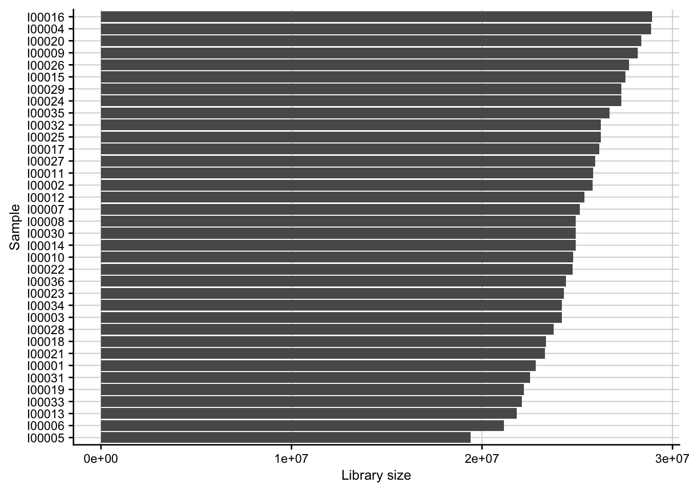
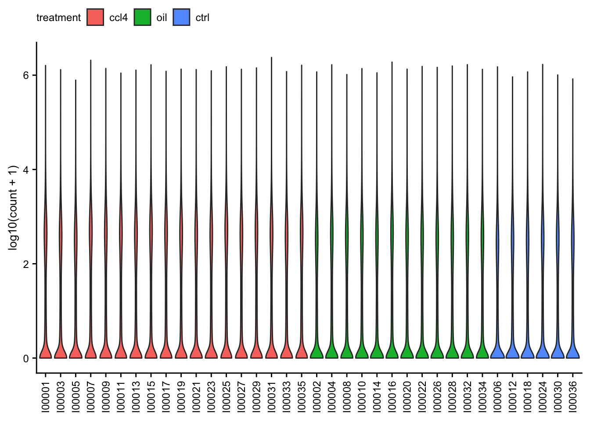
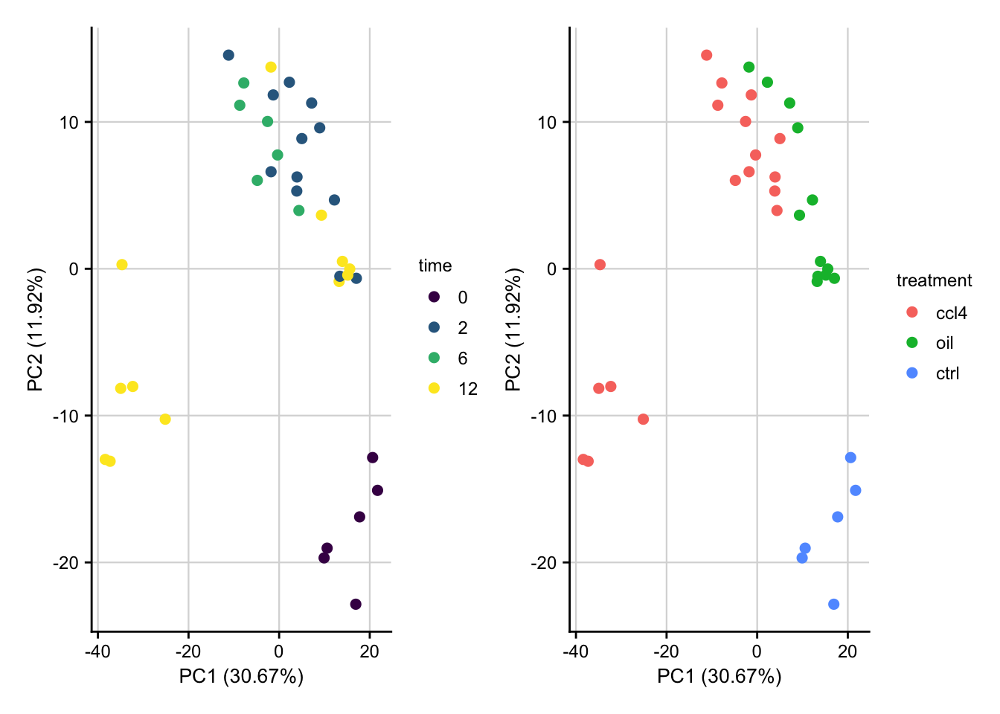
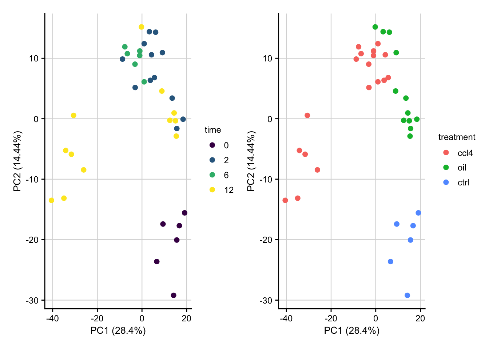
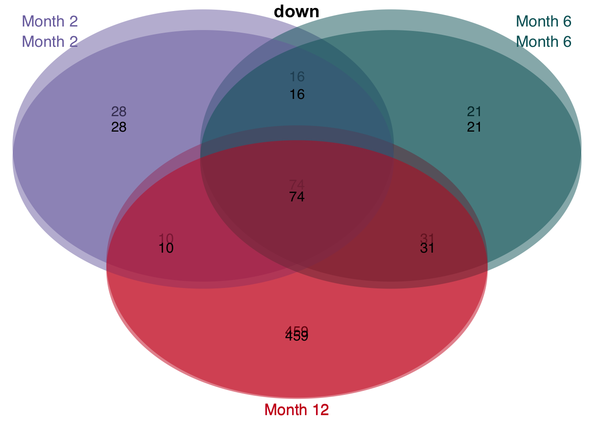

Chronic CCl4 mouse model
Last updated: 2021-01-07
Checks: 7 0
Knit directory: meta-liver/
This reproducible R Markdown analysis was created with workflowr (version 1.6.2). The Checks tab describes the reproducibility checks that were applied when the results were created. The Past versions tab lists the development history.
Great! Since the R Markdown file has been committed to the Git repository, you know the exact version of the code that produced these results.
Great job! The global environment was empty. Objects defined in the global environment can affect the analysis in your R Markdown file in unknown ways. For reproduciblity it’s best to always run the code in an empty environment.
The command set.seed(20201218) was run prior to running the code in the R Markdown file. Setting a seed ensures that any results that rely on randomness, e.g. subsampling or permutations, are reproducible.
Great job! Recording the operating system, R version, and package versions is critical for reproducibility.
Nice! There were no cached chunks for this analysis, so you can be confident that you successfully produced the results during this run.
Great job! Using relative paths to the files within your workflowr project makes it easier to run your code on other machines.
Great! You are using Git for version control. Tracking code development and connecting the code version to the results is critical for reproducibility.
The results in this page were generated with repository version 9212828. See the Past versions tab to see a history of the changes made to the R Markdown and HTML files.
Note that you need to be careful to ensure that all relevant files for the analysis have been committed to Git prior to generating the results (you can use wflow_publish or wflow_git_commit). workflowr only checks the R Markdown file, but you know if there are other scripts or data files that it depends on. Below is the status of the Git repository when the results were generated:
Ignored files:
Ignored: .DS_Store
Ignored: .Rhistory
Ignored: .Rproj.user/
Ignored: analysis/human-diehl-nafld_cache/
Ignored: analysis/human-hampe13-nash_cache/
Ignored: analysis/human-hampe14-misc_cache/
Ignored: analysis/human-hoang-nafld_cache/
Ignored: analysis/human-ramnath-fibrosis_cache/
Ignored: analysis/meta-chronic-vs-acute_cache/
Ignored: analysis/meta-mouse-vs-human_cache/
Ignored: analysis/mouse-acute-apap_cache/
Ignored: analysis/mouse-acute-bdl_cache/
Ignored: analysis/mouse-acute-ccl4_cache/
Ignored: analysis/mouse-acute-lps_cache/
Ignored: analysis/mouse-acute-ph_cache/
Ignored: analysis/mouse-acute-tunicamycin_cache/
Ignored: analysis/plot-acute-apap_cache/
Ignored: analysis/plot-acute-bdl_cache/
Ignored: analysis/plot-acute-ccl4_cache/
Ignored: analysis/plot-acute-ph_cache/
Ignored: analysis/plot-chronic-ccl4_cache/
Ignored: analysis/plot-chronic-vs-acute_cache/
Ignored: analysis/plot-mouse-vs-human_cache/
Ignored: analysis/plot-precision-recall_cache/
Ignored: analysis/plot-study-overview_cache/
Ignored: analysis/plot-teufel-integration_cache/
Ignored: code/.DS_Store
Ignored: code/README.html
Ignored: code/meta-mouse-vs-human/.DS_Store
Ignored: data/.DS_Store
Ignored: data/README.html
Ignored: data/annotation/
Ignored: data/human-diehl-nafld/
Ignored: data/human-hampe13-nash/
Ignored: data/human-hampe14-misc/
Ignored: data/human-hoang-nafld/
Ignored: data/human-ramnath-fibrosis/
Ignored: data/meta-chronic-vs-acute/
Ignored: data/meta-mouse-vs-human/
Ignored: data/mouse-acute-apap/
Ignored: data/mouse-acute-bdl/
Ignored: data/mouse-acute-ccl4/
Ignored: data/mouse-acute-lps/
Ignored: data/mouse-acute-ph/
Ignored: data/mouse-acute-tunicamycin/
Ignored: data/mouse-chronic-ccl4/
Ignored: external_software/.DS_Store
Ignored: external_software/README.html
Ignored: external_software/stem/.DS_Store
Ignored: figures/
Ignored: output/.DS_Store
Ignored: output/README.html
Ignored: output/human-diehl-nafld/
Ignored: output/human-hampe13-nash/
Ignored: output/human-hampe14-misc/
Ignored: output/human-hoang-nafld/
Ignored: output/human-ramnath-fibrosis/
Ignored: output/meta-chronic-vs-acute/
Ignored: output/meta-mouse-vs-human/
Ignored: output/mouse-acute-apap/
Ignored: output/mouse-acute-bdl/
Ignored: output/mouse-acute-ccl4/
Ignored: output/mouse-acute-lps/
Ignored: output/mouse-acute-ph/
Ignored: output/mouse-acute-tunicamycin/
Ignored: output/mouse-chronic-ccl4/
Ignored: renv/library/
Ignored: renv/staging/
Ignored: tables/
Note that any generated files, e.g. HTML, png, CSS, etc., are not included in this status report because it is ok for generated content to have uncommitted changes.
These are the previous versions of the repository in which changes were made to the R Markdown (analysis/mouse-chronic-ccl4.Rmd) and HTML (docs/mouse-chronic-ccl4.html) files. If you’ve configured a remote Git repository (see ?wflow_git_remote), click on the hyperlinks in the table below to view the files as they were in that past version.
| File | Version | Author | Date | Message |
|---|---|---|---|---|
| html | 067c933 | christianholland | 2020-12-23 | Build site. |
| Rmd | d4f78fa | christianholland | 2020-12-23 | wflow_publish("analysis/*.Rmd", delete_cache = T) |
| html | 1e747d9 | christianholland | 2020-12-21 | Build site. |
| Rmd | 558ec8b | christianholland | 2020-12-21 | added top genes of overlap |
| html | 8a9b7bf | christianholland | 2020-12-20 | Build site. |
| html | e22a40b | christianholland | 2020-12-20 | Build site. |
| html | bea437a | christianholland | 2020-12-20 | Build site. |
| Rmd | c78e883 | christianholland | 2020-12-20 | stem characterization |
| html | af38450 | christianholland | 2020-12-19 | Build site. |
| Rmd | 78a25d5 | christianholland | 2020-12-19 | minor changes |
| html | b9d1691 | christianholland | 2020-12-19 | Build site. |
| Rmd | 50f8a68 | christianholland | 2020-12-19 | minor changes |
| html | 6f071f7 | christianholland | 2020-12-19 | Build site. |
| Rmd | d516e6f | christianholland | 2020-12-19 | fixed typo |
| html | 409ba7d | christianholland | 2020-12-19 | Build site. |
| html | 85a3ce4 | christianholland | 2020-12-19 | Build site. |
| Rmd | f6b3eed | christianholland | 2020-12-19 | wflow_publish(“analysis/mouse-chronic-ccl4.Rmd”) |
| html | c12deea | christianholland | 2020-12-19 | Added stem analysis |
| Rmd | d88ada1 | christianholland | 2020-12-19 | add stem analysis |
| html | c73e126 | christianholland | 2020-12-19 | Build site. |
| Rmd | e4502df | christianholland | 2020-12-19 | Start my new project |
| html | 7bb9aab | christianholland | 2020-12-18 | Build site. |
| Rmd | 261f1a4 | christianholland | 2020-12-18 | Start my new project |
Introduction
Here we analysis a mouse model of CCl4 induced chronic liver disease. The transcriptomic profiles were measured at time point 0, 2, 6, and 12 month. For the time points 2 and 12 month time-matched oil controls are available.
Libraries and sources
These libraries and sources are used for this analysis.
library(tidyverse)
library(tidylog)
library(here)
library(edgeR)
library(biobroom)
library(progeny)
library(dorothea)
library(janitor)
library(msigdf) # remotes::install_github("ToledoEM/msigdf@v7.1")
library(AachenColorPalette)
library(cowplot)
library(lemon)
library(patchwork)
library(VennDiagram)
library(gridExtra)
library(ggpubr)
options("tidylog.display" = list(print))
source(here("code/utils-rnaseq.R"))
source(here("code/utils-utils.R"))
source(here("code/utils-plots.R"))Definition of global variables that are used throughout this analysis.
# i/o
data_path <- "data/mouse-chronic-ccl4"
output_path <- "output/mouse-chronic-ccl4"
# graphical parameters
# fontsize
fz <- 9Preliminary exploratory analysis
Library size
Barplot of the library size (total counts) for each of the samples.
count_matrix <- readRDS(here(data_path, "count_matrix.rds"))
plot_libsize(count_matrix) +
my_theme(fsize = fz)
Count distribution
Violin plots of the raw read counts for each of the samples.
count_matrix <- readRDS(here(data_path, "count_matrix.rds"))
meta <- readRDS(here(data_path, "meta_data.rds"))
count_matrix %>%
tdy("gene", "sample", "count", meta) %>%
arrange(treatment) %>%
ggplot(aes(
x = fct_reorder(sample, as.numeric(treatment)), y = log10(count + 1),
group = sample, fill = treatment
)) +
geom_violin() +
theme(
axis.text.x = element_text(angle = 90, vjust = 0.5, hjust = 1),
legend.position = "top"
) +
labs(x = NULL) +
my_theme(grid = "no", fsize = fz)
#> gather: reorganized (I00001, I00002, I00003, I00004, I00005, …) into (sample, count) [was 32544x37, now 1171584x3]
#> left_join: added 3 columns (time, treatment, group)
#> > rows only in x 0
#> > rows only in y ( 0)
#> > matched rows 1,171,584
#> > ===========
#> > rows total 1,171,584
PCA of raw data
PCA plot of raw read counts contextualized based on the time point and treatment. Before gene with a constant expression across all samples are removed and count values are transformed to log2 scale. Only the top 1000 most variable genes are used as features.
count_matrix <- readRDS(here(data_path, "count_matrix.rds"))
meta <- readRDS(here(data_path, "meta_data.rds"))
stopifnot(colnames(count_matrix) == meta$sample)
# remove constant expressed genes and transform to log2 scale
preprocessed_count_matrix <- preprocess_count_matrix(count_matrix)
#> Discarding 7711 genes
#> Keeping 24833 genes
pca_result <- do_pca(preprocessed_count_matrix, meta, top_n_var_genes = 1000)
#> left_join: added 3 columns (time, treatment, group)
#> > rows only in x 0
#> > rows only in y ( 0)
#> > matched rows 36
#> > ====
#> > rows total 36
plot_pca(pca_result, feature = "time") +
plot_pca(pca_result, feature = "treatment") &
my_theme(fsize = fz)
Data processing
Normalization
Raw read counts are normalized by first filtering out lowly expressed genes, TMM normalization and finally logCPM transformation.
count_matrix <- readRDS(here(data_path, "count_matrix.rds"))
meta <- readRDS(here(data_path, "meta_data.rds"))
stopifnot(meta$sample == colnames(count_matrix))
dge_obj <- DGEList(count_matrix, group = meta$group)
# filter low read counts, TMM normalization and logCPM transformation
norm <- voom_normalization(dge_obj)
#> Discarding 17206 genes
#> Keeping 15338 genes
saveRDS(norm, here(output_path, "normalized_expression.rds"))PCA of normalized data
PCA plot of normalized expression data contextualized based on the time point and treatment. Only the top 1000 most variable genes are used as features.
expr <- readRDS(here(output_path, "normalized_expression.rds"))
meta <- readRDS(here(data_path, "meta_data.rds"))
pca_result <- do_pca(expr, meta, top_n_var_genes = 1000)
#> left_join: added 3 columns (time, treatment, group)
#> > rows only in x 0
#> > rows only in y ( 0)
#> > matched rows 36
#> > ====
#> > rows total 36
saveRDS(pca_result, here(output_path, "pca_result.rds"))
plot_pca(pca_result, feature = "time") +
plot_pca(pca_result, feature = "treatment") &
my_theme(fsize = fz)
Differential gene expression analysis
Running limma
Differential gene expression analysis via limma with the aim to identify the effect of CCl4 intoxication while regression out the effect of the oil.
# load expression and meta data
expr <- readRDS(here(output_path, "normalized_expression.rds"))
meta <- readRDS(here(data_path, "meta_data.rds"))
stopifnot(colnames(expr) == meta$sample)
# build design matrix
design <- model.matrix(~ 0 + group, data = meta)
rownames(design) <- meta$sample
colnames(design) <- levels(meta$group)
# define contrasts
contrasts <- makeContrasts(
# effect of olive oil
oil_2m_vs_0m = oil.2 - wt,
oil_12m_vs_0m = oil.12 - wt,
oil_12m_vs_2m = oil.12 - oil.2,
# treatment vs control ignoring the effect of oil
ccl_2m_vs_0m = ccl4.2 - wt,
ccl_6m_vs_0m = ccl4.6 - wt,
ccl_12m_vs_0m = ccl4.12 - wt,
# treatment vs control regressing out the effect of oil
pure_ccl_2m_vs_0m = (ccl4.2 - wt) - (oil.2 - wt),
pure_ccl_6m_vs_0m = (ccl4.6 - wt) - ((oil.2 + oil.12) / 2 - wt),
pure_ccl_12m_vs_0m = (ccl4.12 - wt) - (oil.12 - wt),
# consecutive time point comparison
consec_12m_vs_6m = ccl4.12 - ccl4.6,
consec_12m_vs_2m = ccl4.12 - ccl4.2,
# consec_48w_vs_8w_2 = (ccl4.48 - oil.48) - (ccl4.8 - oil.8),
consec_6m_vs_2m = ccl4.6 - ccl4.2,
levels = design
)
limma_result <- run_limma(expr, design, contrasts) %>%
assign_deg()
#> Warning: `tbl_df()` is deprecated as of dplyr 1.0.0.
#> Please use `tibble::as_tibble()` instead.
#> This warning is displayed once every 8 hours.
#> Call `lifecycle::last_warnings()` to see where this warning was generated.
#> select: renamed 3 variables (contrast, logFC, pval) and dropped one variable
#> ungroup: no grouping variables
deg_df <- limma_result %>%
mutate(contrast = factor(contrast, levels = c(
"ccl_2m_vs_0m", "ccl_6m_vs_0m",
"ccl_12m_vs_0m",
"pure_ccl_2m_vs_0m",
"pure_ccl_6m_vs_0m",
"pure_ccl_12m_vs_0m",
"consec_6m_vs_2m",
"consec_12m_vs_2m",
"consec_12m_vs_6m",
"oil_2m_vs_0m", "oil_12m_vs_0m",
"oil_12m_vs_2m"
))) %>%
mutate(contrast_reference = case_when(
str_detect(contrast, "oil") ~ "oil",
str_detect(contrast, "^pure_ccl") ~ "pure_ccl4",
str_detect(contrast, "^ccl") ~ "ccl4",
str_detect(contrast, "consec") ~ "consec"
))
saveRDS(deg_df, here(output_path, "limma_result.rds"))Volcano plots
Volcano plots visualizing the effect of CCl4 on gene expression.
df <- readRDS(here(output_path, "limma_result.rds"))
df %>%
filter(contrast_reference == "pure_ccl4") %>%
plot_volcano() +
my_theme(grid = "y", fsize = fz)
#> filter: removed 138,042 rows (75%), 46,014 rows remaining
#> rename: renamed one variable (p)
Overlap of genes
df <- readRDS(here(output_path, "limma_result.rds"))
t = df %>%
filter(contrast_reference == "pure_ccl4") %>%
mutate(class = str_c("Month ", parse_number(as.character(contrast)))) %>%
select(-contrast_reference, -contrast) %>%
mutate(class = factor(class, levels = c("Month 2", "Month 6", "Month 12"))) %>%
group_split(class)
#> filter: removed 138,042 rows (75%), 46,014 rows remaining
#> select: dropped 2 variables (contrast, contrast_reference)
plot_venn_diagram(t)
#> distinct: removed 15,337 rows (>99%), one row remaining
#> distinct: removed 15,337 rows (>99%), one row remaining
#> distinct: removed 15,337 rows (>99%), one row remaining
#> count: now 3 rows and 2 columns, ungrouped
#> count: now 3 rows and 2 columns, ungrouped
#> count: now 3 rows and 2 columns, ungrouped
#> filter: removed 2 rows (67%), one row remaining
#> filter: removed 2 rows (67%), one row remaining
#> filter: removed 2 rows (67%), one row remaining
#> filter: removed 15,060 rows (98%), 278 rows remaining
#> filter: removed 15,078 rows (98%), 260 rows remaining
#> filter: removed 15,078 rows (98%), 260 rows remaining
#> filter: removed 13,713 rows (89%), 1,625 rows remaining
#> filter: removed 15,060 rows (98%), 278 rows remaining
#> filter: removed 13,713 rows (89%), 1,625 rows remaining
#> filter: removed 15,060 rows (98%), 278 rows remaining
#> filter: removed 15,078 rows (98%), 260 rows remaining
#> filter: removed 13,713 rows (89%), 1,625 rows remaining
| Version | Author | Date |
|---|---|---|
| 1e747d9 | christianholland | 2020-12-21 |
#> filter: removed 2 rows (67%), one row remaining
#> filter: removed 2 rows (67%), one row remaining
#> filter: removed 2 rows (67%), one row remaining
#> filter: removed 15,210 rows (99%), 128 rows remaining
#> filter: removed 15,196 rows (99%), 142 rows remaining
#> filter: removed 15,196 rows (99%), 142 rows remaining
#> filter: removed 14,764 rows (96%), 574 rows remaining
#> filter: removed 15,210 rows (99%), 128 rows remaining
#> filter: removed 14,764 rows (96%), 574 rows remaining
#> filter: removed 15,210 rows (99%), 128 rows remaining
#> filter: removed 15,196 rows (99%), 142 rows remaining
#> filter: removed 14,764 rows (96%), 574 rows remaining
| Version | Author | Date |
|---|---|---|
| 1e747d9 | christianholland | 2020-12-21 |

| Version | Author | Date |
|---|---|---|
| 1e747d9 | christianholland | 2020-12-21 |
Top genes of the overlap
df <- readRDS(here(output_path, "limma_result.rds")) %>%
filter(contrast_reference == "pure_ccl4") %>%
filter(regulation != "ns")
#> filter: removed 138,042 rows (75%), 46,014 rows remaining
#> filter: removed 43,007 rows (93%), 3,007 rows remaining
top_genes_ranked = df %>%
# filter for genes that are deregulated at all time points
group_by(gene, regulation) %>%
filter(n() == 3) %>%
summarise(mean_logfc = mean(logFC)) %>%
group_by(regulation) %>%
mutate(rank = row_number(-abs(mean_logfc))) %>%
ungroup()
#> filter (grouped): removed 2,449 rows (81%), 558 rows remaining
#> summarise: now 186 rows and 3 columns, one group variable remaining (gene)
#> ungroup: no grouping variables
top_genes = df %>%
inner_join(top_genes_ranked, by=c("gene", "regulation"))
#> inner_join: added 2 columns (mean_logfc, rank)
#> > rows only in x (2,449)
#> > rows only in y ( 0)
#> > matched rows 558
#> > =======
#> > rows total 558
top_genes %>%
filter(rank <= 5) %>%
ggplot(aes(x=fct_reorder(gene, mean_logfc), y=logFC, group = contrast, fill = contrast)) +
geom_col(position = "dodge") +
facet_rep_wrap(~regulation, ncol = 1, scales = "free") +
my_theme(grid = "y", fsize = fz) +
labs(x="Gene", y="logFC")
#> filter: removed 528 rows (95%), 30 rows remaining
| Version | Author | Date |
|---|---|---|
| 1e747d9 | christianholland | 2020-12-21 |
Time series clustering
Gene expression trajectories are clustered using the STEM software. The cluster algorithm is described here.
Prepare input
# prepare input for stem analysis
df <- readRDS(here(output_path, "limma_result.rds"))
stem_inputs <- df %>%
filter(contrast_reference %in% c("pure_ccl4")) %>%
mutate(class = str_c("Month ", parse_number(as.character(contrast)))) %>%
mutate(class = factor(class, levels = c("Month 2", "Month 6", "Month 12"))) %>%
select(gene, class, logFC, contrast_reference)
#> filter: removed 138,042 rows (75%), 46,014 rows remaining
#> select: dropped 5 variables (contrast, statistic, pval, fdr, regulation)
stem_inputs %>%
select(-contrast_reference) %>%
pivot_wider(names_from = class, values_from = logFC) %>%
write_delim(here(output_path, "stem/input/pure_ccl4.txt"), delim = "\t")
#> select: dropped one variable (contrast_reference)
#> pivot_wider: reorganized (class, logFC) into (Month 2, Month 6, Month 12) [was 46014x3, now 15338x4]Run STEM
STEM is implemented in Java. The .jar file is called from R. Only significant time series clusters are visualized.
# execute stem
stem_res <- run_stem(here(output_path, "stem"), clear_output = T)
#>
#> ── Column specification ────────────────────────────────────────────────────────
#> cols(
#> gene = col_character(),
#> `Month 2` = col_double(),
#> `Month 6` = col_double(),
#> `Month 12` = col_double()
#> )
#> distinct: no rows removed
#> distinct: no rows removed
#>
#> ── Column specification ────────────────────────────────────────────────────────
#> cols(
#> gene = col_character(),
#> SPOT = col_character(),
#> Profile = col_double(),
#> `0` = col_double(),
#> `Month 2` = col_double(),
#> `Month 6` = col_double(),
#> `Month 12` = col_double()
#> )
#> select: dropped one variable (spot)
#> gather: reorganized (x0, month_2, month_6, month_12) into (time, value) [was 3193x7, now 12772x5]
#>
#> ── Column specification ────────────────────────────────────────────────────────
#> cols(
#> `Profile ID` = col_double(),
#> `Profile Model` = col_character(),
#> `Cluster (-1 non-significant)` = col_double(),
#> `# Genes Assigned` = col_double(),
#> `# Gene Expected` = col_double(),
#> `p-value` = col_double()
#> )
#> select: renamed 4 variables (profile, y_coords, size, p) and dropped 2 variables
#> Joining, by = c("profile", "key")
#> inner_join: added 3 columns (y_coords, size, p)
#> > rows only in x ( 0)
#> > rows only in y ( 0)
#> > matched rows 12,772
#> > ========
#> > rows total 12,772
#> inner_join: added one column (symbol)
#> > rows only in x ( 0)
#> > rows only in y (12,145)
#> > matched rows 12,772
#> > ========
#> > rows total 12,772
#> transmute: dropped one variable (symbol)
#> changed 12,644 values (99%) of 'gene' (0 new NA)
saveRDS(stem_res, here(output_path, "stem_result.rds"))
stem_res %>%
filter(p <= 0.05) %>%
filter(key == "pure_ccl4") %>%
distinct() %>%
plot_stem_profiles(model_profile = F) +
labs(x = "Time in Month", y = "logFC") +
my_theme(grid = "y", fsize = fz)
#> filter: removed 3,080 rows (24%), 9,692 rows remaining
#> filter: no rows removed
#> distinct: no rows removed
#> `summarise()` regrouping output by 'key', 'profile', 'p' (override with `.groups` argument)
#> ungroup: no grouping variables
Cluster characterization
STEM clusters are characterized by GO terms, PROGENy’s pathways and DoRothEA’s TFs. As statistic over-representation analysis is used.
stem_res = readRDS(here(output_path, "stem_result.rds"))
signatures = stem_res %>%
filter(p <= 0.05) %>%
distinct(profile, gene, p_profile = p)
#> filter: removed 3,080 rows (24%), 9,692 rows remaining
#> distinct: removed 7,269 rows (75%), 2,423 rows remaining
genesets = load_genesets() %>%
filter(confidence %in% c(NA,"A", "B", "C"))
#> filter: removed 2,340,732 rows (80%), 597,560 rows remaining
#> select: renamed one variable (gene) and dropped 2 variables
#> gather: reorganized (Androgen, EGFR, Estrogen, Hypoxia, JAK-STAT, …) into (geneset, weight) [was 1299x15, now 18186x3]
#> filter: removed 16,785 rows (92%), 1,401 rows remaining
#> select: dropped one variable (weight)
#> select: renamed 2 variables (geneset, gene) and dropped one variable
#> filter: removed 396,818 rows (39%), 612,694 rows remaining
ora_res = signatures %>%
nest(sig = c(-profile)) %>%
dplyr::mutate(ora = sig %>% map(run_ora, sets = genesets, min_size = 10,
options = list(alternative = "greater"),
background_n = 20000)) %>%
select(-sig) %>%
unnest(ora)
#> add_count: new variable 'n' (integer) with 643 unique values and 0% NA
#> filter: removed 13,996 rows (2%), 598,698 rows remaining
#> select: dropped one variable (n)
#> ungroup: no grouping variables
#> select: dropped 4 variables (set, conf.low, conf.high, method)
#> add_count: new variable 'n' (integer) with 643 unique values and 0% NA
#> filter: removed 13,996 rows (2%), 598,698 rows remaining
#> select: dropped one variable (n)
#> ungroup: no grouping variables
#> select: dropped 4 variables (set, conf.low, conf.high, method)
#> add_count: new variable 'n' (integer) with 643 unique values and 0% NA
#> filter: removed 13,996 rows (2%), 598,698 rows remaining
#> select: dropped one variable (n)
#> ungroup: no grouping variables
#> select: dropped 4 variables (set, conf.low, conf.high, method)
#> add_count: new variable 'n' (integer) with 643 unique values and 0% NA
#> filter: removed 13,996 rows (2%), 598,698 rows remaining
#> select: dropped one variable (n)
#> ungroup: no grouping variables
#> select: dropped 4 variables (set, conf.low, conf.high, method)
#> add_count: new variable 'n' (integer) with 643 unique values and 0% NA
#> filter: removed 13,996 rows (2%), 598,698 rows remaining
#> select: dropped one variable (n)
#> ungroup: no grouping variables
#> select: dropped 4 variables (set, conf.low, conf.high, method)
#> add_count: new variable 'n' (integer) with 643 unique values and 0% NA
#> filter: removed 13,996 rows (2%), 598,698 rows remaining
#> select: dropped one variable (n)
#> ungroup: no grouping variables
#> select: dropped 4 variables (set, conf.low, conf.high, method)
#> add_count: new variable 'n' (integer) with 643 unique values and 0% NA
#> filter: removed 13,996 rows (2%), 598,698 rows remaining
#> select: dropped one variable (n)
#> ungroup: no grouping variables
#> select: dropped 4 variables (set, conf.low, conf.high, method)
#> select: dropped one variable (sig)
saveRDS(ora_res, here(output_path, "stem_characterization.rds"))Translation to HGNC symbols
For later comparisons to human data the mouse gene symbols are mapped to their human orthologs.
df <- readRDS(here(output_path, "limma_result.rds"))
mapped_df <- df %>%
translate_gene_ids(from = "symbol_mgi", to = "symbol_hgnc") %>%
drop_na() %>%
# for duplicated genes, keep the one with the highest absolute logFC
group_by(contrast_reference, contrast, gene) %>%
slice_max(order_by = abs(logFC), n = 1, with_ties = F) %>%
ungroup()
#> select: dropped 6 variables (ensembl_mgi, ensembl_v_mgi, entrez_mgi, ensembl_hgnc, ensembl_v_hgnc, …)
#> drop_na: removed 1,905 rows (6%), 30,461 rows remaining
#> rename: renamed one variable (symbol_mgi)
#> left_join: added one column (symbol_hgnc)
#> > rows only in x 22,992
#> > rows only in y ( 16,094)
#> > matched rows 172,404 (includes duplicates)
#> > =========
#> > rows total 195,396
#> select: renamed one variable (gene) and dropped one variable
#> drop_na: removed 22,992 rows (12%), 172,404 rows remaining
#> slice_max (grouped): removed 11,328 rows (7%), 161,076 rows remaining
#> ungroup: no grouping variables
saveRDS(mapped_df, here(output_path, "limma_result_hs.rds"))Time spend to execute this analysis: 01:16 minutes.
sessionInfo()
#> R version 4.0.2 (2020-06-22)
#> Platform: x86_64-apple-darwin17.0 (64-bit)
#> Running under: macOS Mojave 10.14.5
#>
#> Matrix products: default
#> BLAS: /Library/Frameworks/R.framework/Versions/4.0/Resources/lib/libRblas.dylib
#> LAPACK: /Library/Frameworks/R.framework/Versions/4.0/Resources/lib/libRlapack.dylib
#>
#> locale:
#> [1] en_US.UTF-8/en_US.UTF-8/en_US.UTF-8/C/en_US.UTF-8/en_US.UTF-8
#>
#> attached base packages:
#> [1] grid stats graphics grDevices datasets utils methods
#> [8] base
#>
#> other attached packages:
#> [1] ggpubr_0.4.0 gridExtra_2.3 VennDiagram_1.6.20
#> [4] futile.logger_1.4.3 patchwork_1.1.1 lemon_0.4.5
#> [7] cowplot_1.1.0 AachenColorPalette_1.1.2 msigdf_7.1
#> [10] janitor_2.0.1 dorothea_1.0.1 progeny_1.10.0
#> [13] biobroom_1.20.0 broom_0.7.3 edgeR_3.30.3
#> [16] limma_3.44.3 here_1.0.1 tidylog_1.0.2
#> [19] forcats_0.5.0 stringr_1.4.0 dplyr_1.0.2
#> [22] purrr_0.3.4 readr_1.4.0 tidyr_1.1.2
#> [25] tibble_3.0.4 ggplot2_3.3.2 tidyverse_1.3.0
#> [28] workflowr_1.6.2
#>
#> loaded via a namespace (and not attached):
#> [1] colorspace_2.0-0 ggsignif_0.6.0 ellipsis_0.3.1
#> [4] rio_0.5.16 rprojroot_2.0.2 snakecase_0.11.0
#> [7] fs_1.5.0 rstudioapi_0.13 farver_2.0.3
#> [10] ggrepel_0.9.0 fansi_0.4.1 lubridate_1.7.9.2
#> [13] xml2_1.3.2 codetools_0.2-16 knitr_1.30
#> [16] jsonlite_1.7.2 bcellViper_1.24.0 dbplyr_2.0.0
#> [19] compiler_4.0.2 httr_1.4.2 backports_1.2.1
#> [22] assertthat_0.2.1 cli_2.2.0 later_1.1.0.1
#> [25] formatR_1.7 htmltools_0.5.0 tools_4.0.2
#> [28] gtable_0.3.0 glue_1.4.2 Rcpp_1.0.5
#> [31] carData_3.0-4 Biobase_2.48.0 cellranger_1.1.0
#> [34] vctrs_0.3.6 xfun_0.19 openxlsx_4.2.3
#> [37] rvest_0.3.6 lifecycle_0.2.0 renv_0.12.3
#> [40] rstatix_0.6.0 scales_1.1.1 clisymbols_1.2.0
#> [43] hms_0.5.3 promises_1.1.1 parallel_4.0.2
#> [46] lambda.r_1.2.4 yaml_2.2.1 curl_4.3
#> [49] stringi_1.5.3 BiocGenerics_0.34.0 zip_2.1.1
#> [52] rlang_0.4.9 pkgconfig_2.0.3 evaluate_0.14
#> [55] lattice_0.20-41 labeling_0.4.2 tidyselect_1.1.0
#> [58] plyr_1.8.6 magrittr_2.0.1 R6_2.5.0
#> [61] generics_0.1.0 DBI_1.1.0 pillar_1.4.7
#> [64] haven_2.3.1 whisker_0.4 foreign_0.8-80
#> [67] withr_2.3.0 abind_1.4-5 modelr_0.1.8
#> [70] crayon_1.3.4 car_3.0-10 futile.options_1.0.1
#> [73] rmarkdown_2.6 locfit_1.5-9.4 readxl_1.3.1
#> [76] data.table_1.13.4 git2r_0.27.1 reprex_0.3.0
#> [79] digest_0.6.27 httpuv_1.5.4 munsell_0.5.0
#> [82] viridisLite_0.3.0